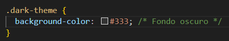
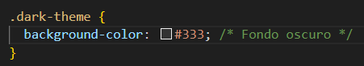
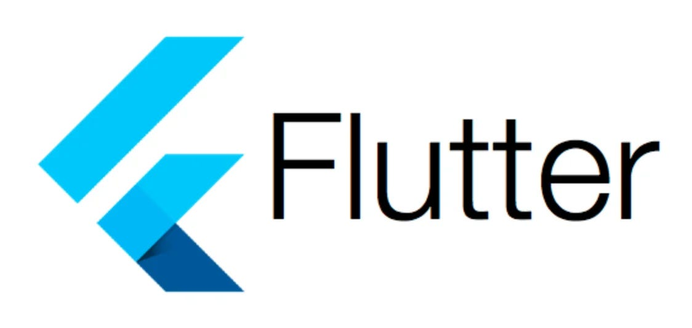
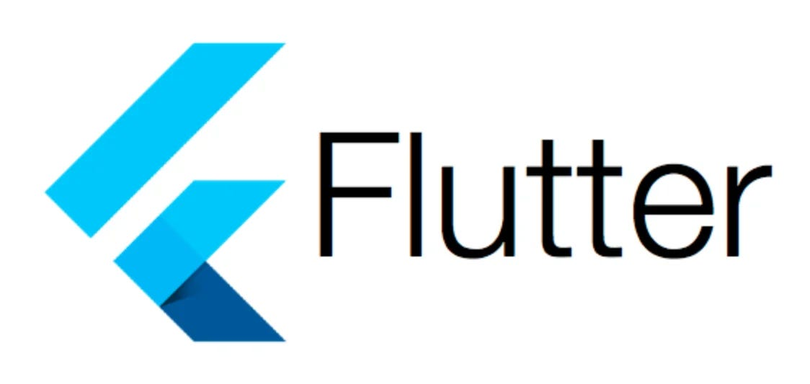

Tecnologias Vistas
En este ejercicio, se utiliza JavaScript para agregar funcionalidad interactiva a un botón que cambia el tema de la página. Se define una función llamada toggleTheme() que se activa cuando se hace clic en el botón.Dentro de la función toggleTheme(), se utiliza document.body.classList.toggle('dark-theme') para alternar la clase dark-theme en el elemento body del documento HTML. En el CSS, se definen reglas de estilo para el tema claro por defecto y para el tema oscuro, utilizando la clase dark-theme.
 

 
